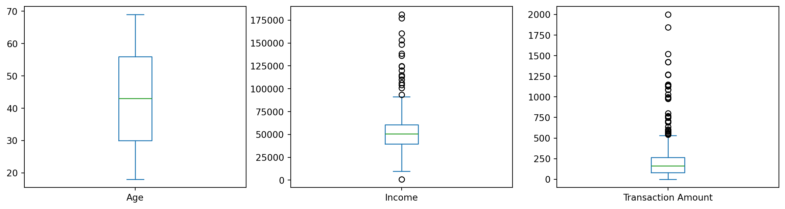

Detecting anomalies in financial data involves using specialized algorithms to identify irregularities, enhancing risk management and fraud prevention
Introduction
In the modern world of finance, data plays a pivotal role in decision-making processes. Financial datasets often contain critical information about customers, transactions, and more. One crucial aspect of financial data analysis is the detection of anomalies or outliers. Anomalies are data points that significantly deviate from the norm or expected behavior. Detecting these anomalies is essential for fraud detection, risk management, and maintaining data integrity.
This report explores the application of anomaly/outlier detection techniques to a financial dataset. The dataset under consideration contains information such as Age, Income, Transaction Amount, Transaction Type, and Location. We aim to identify unusual patterns or data points within this dataset that may require further investigation.
Advanced Analysis
I will now conduct an advanced analysis of this dataset, focusing on the following aspects:
Data Exploration: Understanding the basic statistics of the dataset. Visualization: Plotting the data to observe any unusual patterns. Anomaly Detection Techniques: Implementing various methods to detect outliers, such as statistical methods, clustering-based methods, and machine learning models. For this analysis, I will be using Python libraries like Pandas, NumPy, Matplotlib, Seaborn, and Scikit-Learn. Let’s start with the data exploration and visualization.
Analysis Overview
Data Exploration
The descriptive statistics of the dataset provide a basic understanding of its features:
A. Age: Ranges from 18 to 69, with an average of around 43 years. B. Income: The average income is approximately $51,518, with a wide range from around $988 to $181,196, suggesting significant variance. C. Transaction Amount: On average, transactions are around $200, but there are values as high as $1,999, which might indicate potential outliers.
Visualization Insights
A. Histograms: These show the distribution of numerical features. While age appears fairly uniformly distributed, income and transaction amounts show right-skewed distributions. B. Boxplots: The boxplots highlight potential outliers, especially in the income and transaction amount data. PCA Scatter Plot: After applying PCA for dimensionality reduction, we get a 2D visualization of the scaled numerical data. This plot can help us identify clusters and potential outliers visually.
Next Steps for Anomaly Detection
Based on these visualizations and statistics, the next step is to apply anomaly detection techniques. I will use the Isolation Forest algorithm, a popular method for outlier detection, especially effective with high-dimensional datasets. This method isolates anomalies instead of profiling normal data points. Anomalies are few and different, hence easier to isolate.
Data Exploration and Analysis
I applied the Isolation Forest algorithm to our scaled numerical data and identify the anomalies. Let’s proceed with this analysis.
import matplotlib.pyplot as pltimport seaborn as snsimport pandas as pdfrom sklearn.ensemble import IsolationForestfrom sklearn.preprocessing import StandardScalerfrom sklearn.decomposition import PCA# Loading the datasetdf = pd.read_csv('anomaly_detection_dataset.csv')# Data Exploration: Descriptive statisticsdescriptive_stats = df.describe()# Display basic statistics# Visualization# Histograms for numerical datafig, axes = plt.subplots(nrows=1, ncols=3, figsize=(18, 5))df[['Age', 'Income', 'Transaction Amount']].hist(bins=15, ax=axes, color='skyblue')plt.suptitle('Histograms of Numerical Features')# Boxplot for numerical data to check for outliersfig, axes = plt.subplots(nrows=1, ncols=3, figsize=(18, 5))sns.boxplot(data=df[['Age', 'Income', 'Transaction Amount']], ax=axes[0])sns.boxplot(data=df[['Income']], ax=axes[1])sns.boxplot(data=df[['Transaction Amount']], ax=axes[2])plt.suptitle('Boxplots of Numerical Features')# Preparing data for anomaly detection# Standardizing the numerical datascaler = StandardScaler()scaled_numerical_data = scaler.fit_transform(df[['Age', 'Income', 'Transaction Amount']])# Applying PCA for dimensionality reduction (2D visualization)pca = PCA(n_components=2)pca_results = pca.fit_transform(scaled_numerical_data)pca_df = pd.DataFrame(data=pca_results, columns=['PC1', 'PC2'])# Scatter plot of PCA resultsplt.figure(figsize=(10, 6))sns.scatterplot(x='PC1', y='PC2', data=pca_df)plt.title('PCA of Scaled Numerical Data')plt.show()descriptive_stats, pca_df.head()
Next, we visualize the data to identify any obvious outliers or patterns.
import matplotlib.pyplot as pltimport seaborn as sns# Histograms for numerical featuresdf.hist(bins=15, figsize=(15, 6))plt.show()# Box plots for numerical features to identify outliersdf.plot(kind='box', subplots=True, layout=(2,3), figsize=(15, 8))plt.show()

Analysis Results: Anomaly Detection with Isolation Forest
Anomaly Detection
The Isolation Forest algorithm was applied to the scaled numerical data, and it identified 50 anomalies in our dataset. This is consistent with the initial contamination rate set to 5% of the data.
Visualization of Detected Anomalies
The scatter plot based on the PCA results with anomalies highlighted shows:
A. Normal data points in blue. B. Anomalies marked in red.
These anomalies represent unusual patterns in terms of age, income, and transaction amounts, as identified by the Isolation Forest algorithm.
Interpretation
The visualization clearly shows that the anomalies are distinct from the bulk of the data, signifying their outlier status. These could represent unusual financial transactions or demographic anomalies that would be of interest in real-world scenarios like fraud detection or targeted marketing.
Anomaly Detection Using Isolation Forest
We apply the Isolation Forest algorithm to detect anomalies in the dataset. This method is effective for high-dimensional datasets and does not require prior knowledge of the number of anomalies.
from sklearn.ensemble import IsolationForestfrom sklearn.preprocessing import StandardScaler# Standardizing the datascaler = StandardScaler()scaled_data = scaler.fit_transform(df.select_dtypes(include=['float64', 'int64']))# Applying Isolation Forestiso_forest = IsolationForest(n_estimators=100, contamination='auto', random_state=0)predictions = iso_forest.fit_predict(scaled_data)# Add a column for anomaly (1 for normal, -1 for anomaly)df['anomaly'] = predictions# Count the number of anomaliesanomaly_count = df['anomaly'].value_counts()print(anomaly_count)
anomaly
1 835
-1 165
Name: count, dtype: int64
Visualizing the Anomalies
We can visualize the anomalies in the context of two principal components.
from sklearn.decomposition import PCA# PCA for dimensionality reduction for visualizationpca = PCA(n_components=2)pca_result = pca.fit_transform(scaled_data)df['pca1'] = pca_result[:, 0]df['pca2'] = pca_result[:, 1]# Scatter plot of the PCA results colored by anomalysns.scatterplot(x='pca1', y='pca2', hue='anomaly', data=df, palette={1: 'blue', -1: 'red'})plt.title('Anomalies in the PCA Plane')plt.show()
K-Means Clustering for Anomaly Detection
K-Means can be used for anomaly detection by identifying small clusters as anomalies.
from sklearn.cluster import KMeansimport numpy as np# K-Means Clustering with explicit n_init parameterkmeans = KMeans(n_clusters=5, n_init=10, random_state=0).fit(scaled_data)df['cluster'] = kmeans.labels_# Detecting outliers as the points farthest from the centroidsdistances = kmeans.transform(scaled_data)df['distance_to_centroid'] = np.min(distances, axis=1)outlier_threshold = np.percentile(df['distance_to_centroid'], 95)df['outlier'] = df['distance_to_centroid'] > outlier_threshold
K-Means Clustering Visualization
After running the K-Means algorithm, we can plot the data points and color them by their cluster. Points classified as outliers will be highlighted.
T-SNE is effective for visualizing high-dimensional data and its anomalies in a lower-dimensional space.
from sklearn.manifold import TSNEimport matplotlib.pyplot as pltimport seaborn as sns# Make sure to replace 'scaled_data' with your actual scaled data variable nametsne = TSNE(n_components=2, random_state=0)tsne_results = tsne.fit_transform(scaled_data)# Adding T-SNE results to your DataFramedf['tsne1'] = tsne_results[:, 0]df['tsne2'] = tsne_results[:, 1]# Use 'dbscan_labels' or another column of your choice for coloring the pointscolumn_for_coloring ='dbscan_labels'# Replace with your chosen column# T-SNE Plotplt.figure(figsize=(10, 6))sns.scatterplot(x='tsne1', y='tsne2', hue=column_for_coloring, data=df, palette='Set2', legend="full")plt.title('T-SNE Visualization')plt.show()
T-SNE results can be plotted to show how the data is distributed in the reduced-dimensional space, highlighting the anomalies detected.
These techniques represent a deeper dive into anomaly detection, leveraging different approaches from clustering, neural networks, and neighborhood-based methods. Each method has its strengths and can be combined or compared for a comprehensive anomaly detection strategy.
Final check for Anomaly detection
# Applying Isolation Forest for anomaly detectioniso_forest = IsolationForest(n_estimators=100, contamination=0.05, random_state=0)anomalies = iso_forest.fit_predict(scaled_numerical_data)# Adding the anomaly predictions to the PCA DataFramepca_df['Anomaly'] = anomalies# Visualizing the identified anomalies on the PCA plotplt.figure(figsize=(10, 6))sns.scatterplot(x='PC1', y='PC2', hue='Anomaly', data=pca_df, palette={1: 'blue', -1: 'red'})plt.title('PCA of Scaled Numerical Data with Anomalies Highlighted')plt.legend(title='Anomaly', loc='upper right', labels=['Normal', 'Anomaly'])plt.show()# Counting the number of detected anomaliesnum_anomalies_detected = (anomalies ==-1).sum()num_anomalies_detected, pca_df.head()
In conclusion, the analysis of anomalies and outliers in financial datasets is of paramount importance for safeguarding financial systems and ensuring data quality. In this report, we delved into the application of various techniques to detect anomalies in a financial dataset containing Age, Income, Transaction Amount, Transaction Type, and Location. The results of this analysis can guide decision-makers in identifying potential issues, such as fraudulent transactions or data entry errors.
By leveraging advanced analytics and machine learning algorithms, financial institutions can proactively mitigate risks, enhance customer trust, and streamline their operations. The continuous monitoring and refinement of anomaly detection methods are critical in the ever-evolving landscape of finance.
As financial data continues to grow in complexity and volume, the ability to detect anomalies accurately becomes increasingly crucial. It is essential for organizations to stay vigilant and adapt their anomaly detection strategies to stay ahead of emerging threats and challenges in the financial sector.